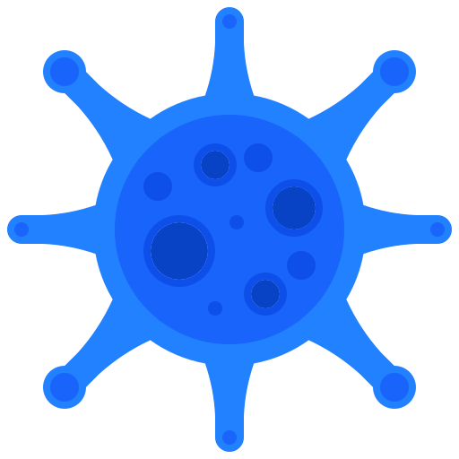

<ion-header class="ion-no-border">
    <ion-toolbar color="dark" class="ion-text-center">
        <ion-buttons slot="start">
            <ion-back-button color="primary" text="" defaultHref="paises-list"></ion-back-button>
        </ion-buttons>
        
    </ion-toolbar>
</ion-header>

<ion-content color="oscuro">
    <ion-card-title class="ion-text-center">{{pais.name}}</ion-card-title>
    <ion-card-content>

        <ion-card-subtitle>
            <ion-text color="primary">
                Source:
            </ion-text>
            {{pais.source}}</ion-card-subtitle>
        <ion-card-subtitle>
            <ion-text color="primary">
                By:
            </ion-text> Narrativa & AppliedXL</ion-card-subtitle>

    </ion-card-content>


    <ion-card color="primary" mode="ios">
        <ion-card-content>
            <ion-grid fixed class="ion-text-center">
                <ion-row>
                    <ion-col size="3">
                        <ion-icon name="calendar-outline" style="zoom:2.0;"></ion-icon>
                        <p>Fecha</p>
                    </ion-col>

                    <ion-col size="3">
                        <ion-icon name="trending-up-sharp" style="zoom:2.0;"></ion-icon>
                        <p>Casos</p>
                    </ion-col>

                    <ion-col size="3">
                        <ion-icon name="skull-outline" style="zoom:2.0;"></ion-icon>
                        <p>Muertes</p>
                    </ion-col>

                    <ion-col size="3">
                        <ion-icon name="pulse" style="zoom:2.0;"></ion-icon>
                        <p>Curados</p>
                    </ion-col>

                </ion-row>
            </ion-grid>
        </ion-card-content>
    </ion-card>
</ion-content>